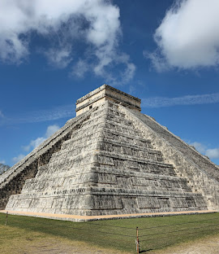
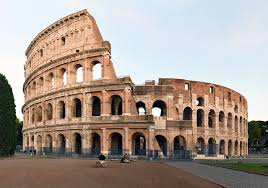

7 Wonders of the World
Table oh Contents
Chichen Itza
(Click the photo for whole information)

Chichén Itzá[nb 1] (often spelled Chichen Itza in English and traditional Yucatec Maya) Yucatec Maya pronunciationⓘ was a large pre-Columbian city built by the Maya people of the Terminal Classic period. The archeological site is located in Tinúm Municipality, Yucatán State, Mexico.[1]
Christ the Redeemer
(Click the photo for whole information)
Christ the Redeemer (Portuguese: Cristo Redentor, standard Brazilian Portuguese: [ˈkɾistu ʁedẽˈtoʁ]) is an Art Deco statue of Jesus in Rio de Janeiro, Brazil, created by French-Polish sculptor Paul Landowski and built by Brazilian engineer Heitor da Silva Costa, in collaboration with French engineer Albert Caquot. Romanian sculptor Gheorghe Leonida sculpted the face.
Colosseum
(Click the photo for whole information)

The Colosseum (/ˌkɒləˈsiːəm/ KOL-ə-SEE-əm; Italian: Colosseo [kolosˈsɛːo], ultimately from Ancient Greek word "kolossos" meaning a large statue or giant) is an elliptical amphitheatre in the centre of the city of Rome, Italy, just east of the Roman Forum.
Greate wall of China
(Click the photo for whole information)

The Great Wall of China (traditional Chinese: 萬里長城; simplified Chinese: 万里长城; pinyin: Wà nlǐ Chángchéng, literally "ten thousand li long wall") is a series of fortifications in China.
Machu Picchu
(Click the photo for whole information)
Machu Picchu[a] is a 15th-century Inca citadel located in the Eastern Cordillera of southern Peru on a mountain ridge at 2,430 meters (7,970 ft).[9] Often referred to as the "Lost City of the Incas",[10] it is the most familiar icon of the Inca Empire.
Petra
(Click the photo for whole information)

Petra (Arabic: ٱلْبَتْراء, romanized: Al-Batrāʾ; Ancient Greek: Î ÎÏ„Ïα "Rock"), originally known to its inhabitants as Raqmu (Nabataean: 𐢛𐢚𐢒) or (𐢛𐢚𐢓𐢈), (Raqēmō),[3][4] is an ancient city and archaeological site in southern Jordan.
Taj Mahal
(Click the photo for whole information)

The Taj Mahal (/ˌtɑːdʒ məˈhɑːl, ˌtɑːʒ -/ TAHJ mə-HAHL, TAHZH -⁠ ; Hindustani: [taːdʒ ˈmɛɦ(ɛ)l]; lit. 'Crown of the Palace') is an ivory-white marble mausoleum on the right bank of the river Yamuna in Agra, Uttar Pradesh, India.